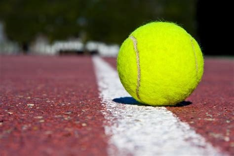

 Tennis is a racket sport that is played either individually against a single opponent (singles) or between two teams of two players each (doubles). Each player uses a tennis racket strung with a cord to strike a hollow rubber ball covered with felt over or around a net and into the opponent's court. The object of the game is to manoeuvre the ball in such a way that the opponent is not able to play a valid return. The player unable to return the ball validly will not gain a point, while the opposite player will.[1][2]. Playable at all levels of society and at all ages, tennis can be played by anyone who can hold a racket, including wheelchair users. The original forms of tennis developed in France during the late Middle Ages.[3] The modern form of tennis originated in Birmingham, England, in the late 19th century as lawn tennis.[4] It had close connections to various field (lawn) games such as croquet and bowls as well as to the older racket sport today called real tennis.[5] The rules of modern tennis have changed little since the 1890s. Two exceptions are that until 1961 the server had to keep one foot on the ground at all times,[6][7] and the adoption of the tiebreak in the 1970s.[8] A recent addition to professional tennis has been the adoption of electronic review technology coupled with a point-challenge system, which allows a player to contest the line call of a point, a system known as Hawk-Eye .[9][10]